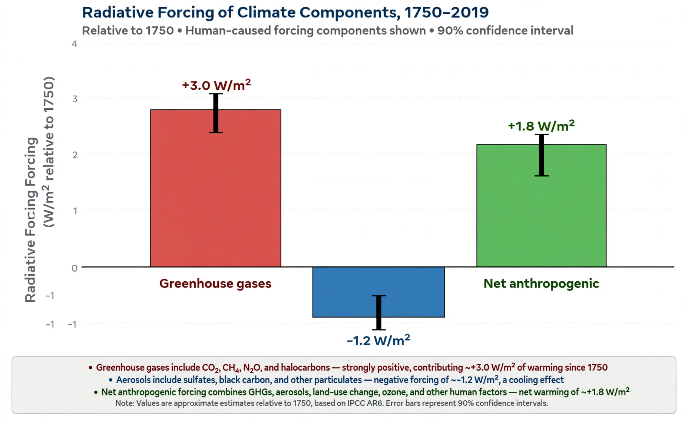

Radiative forcing

Radiative forcing is the change in the net flow of radiant energy at the top of the atmosphere (or at the tropopause) caused by some agent — a change in {L('Greenhouse_gas','greenhouse gases')}, aerosols, solar output or surface reflectivity — measured in watts per square metre (W/m²). Positive forcing warms the planet; negative forcing cools it.
The concept, central to the assessments of the {L('IPCC','IPCC')}, lets very different influences be compared on one scale and summed to estimate how far the climate is being pushed from equilibrium.
Magnitudes
The forcing from carbon dioxide follows a logarithmic formula, approximately 5.35 × ln(C/C₀) W/m² for concentration C relative to its starting value; each doubling of CO₂ gives the same forcing, about 3.7 W/m². Methane, nitrous oxide, halocarbons and ozone add further positive forcing.
Human-caused aerosols — sulphate, black carbon and others — give a net negative forcing by reflecting sunlight and altering clouds, masking part of the greenhouse warming. The total human-caused forcing since 1750 is assessed at roughly 2.7 W/m², with the aerosol contribution the largest source of uncertainty in the total.
Use and limits
Forcing links emissions to response: the eventual warming for a given forcing depends on the climate's sensitivity and its feedbacks (water vapour, ice albedo, clouds). Related measures such as effective radiative forcing refine the idea by accounting for rapid atmospheric adjustments. See Greenhouse effect and Global warming.
See also: Greenhouse effect · Greenhouse gas · Global warming · IPCC · Climate change